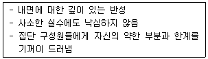
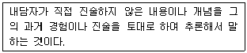
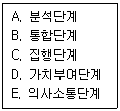
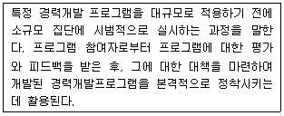
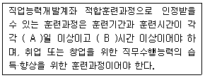
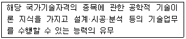
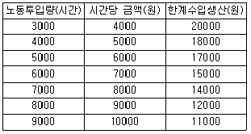
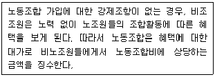
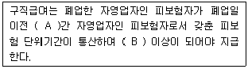

직업상담사-2급 (2013-06-14 기출문제)
1과목: 직업상담학
1. 다음 중 의사결정의 촉진을 위한 “6개의 생각하는 모자(Six Thinking Hats)” 기법의 모자 색상별 역할에 관한 설명으로 옳은 것은?
- 청색 – 낙관적이며, 모든 일이 잘 될 것이라고 생각한다.
- 적색 – 직관에 의존하고, 직감에 따라 행동한다.
- 흑색 – 직관에 의존하고, 직감에 따라 행동한다.
- 황색 – 새로운 대안들을 찾으려 노력하고, 문제들을 다른 각도에서 바라본다.
(정답률: 84%)

2. 인간중심적 상담에서 적합한 내담자인지 알아보기 위해 상담자가 생각해 보아야 할 것은?
- 상담자의 적극적인 개입 없이도 자신의 방식을 찾아갈 수 있는 내담자의 역량을 어느 정도인가
- 무의식적인 방어의 강도가 어느 정도이며 주로 사용하는 방어기제의 종류는 무엇인가
- 개인과 환경 간의 상호작용에 의해 만들어진 성격 유형은 무엇인가
- 내담자의 기억에서 우세하게 나타나는 주제의 내용과 양상은 무엇인가
(정답률: 83%)
3. 내담자의 흥미를 사정하는 목적과 가장 거리가 먼 것은?
- 여가선호와 직업선호 구별하기
- 직업탐색 조장하기
- 직업 · 교육상 불만족 원인 규명하기
- 기술과 능력 범위 탐색하기
(정답률: 67%)
4. 직업상담 과정과 상담사의 역할을 잘못 짝지은 것은?
- 인지치료 – 수동적이고 수용적인 태도
- 정신분석적 상담 – 텅 빈 스크린
- 내담자 중심의 상담 – 촉진적인 관계형성 분위기 조성
- 행동치료 – 능동적이고 지시적인 역할
(정답률: 80%)
5. 다음 중 직업상담사의 역할과 가장 거리가 먼 것은?
- 직업정보 분석
- 직업상담
- 직업지도 프로그램 운영
- 새로운 직무분야 개발
(정답률: 87%)
6. Ellis가 개발한 인지적 · 정서적 상담에서 정서적 행동적 결과를 야기하는 것은?
- 선행사건
- 논박
- 신념
- 효과
(정답률: 71%)
7. 다음 중 비합리적이거나 비논리적 사고체계를 지닌 구직자에게 가장 효율적인 상담기법은?
- 내담자중심 상담
- 정신분석 상담
- 합리적 · 정서적 상담
- 교류분석 상담
(정답률: 82%)
8. 다음 행동특성을 모두 포함하는 집단상담자의 자질은?

- 타인의 복지에 대한 관심
- 자기 수용
- 개방적 소양
- 공감적 이해 능력
(정답률: 76%)
9. 다음 중 사이버 직업상담의 장점과 가장 거리가 먼 것은?
- 개인의 지위, 연령, 신분, 권력 등을 짐작할 수 있는 사회적 단서가 제공되지 않으므로 전달되는 내용 자체에 많은 주의를 기울이고 의미를 부여할 수 있다.
- 내담자의 자발적 참여로 상담이 진행되는 경우가 대면 상담에 비해 압도적으로 많으므로 내담자들의 문제해결에 대한 동기가 높다고 할 수 있다.
- 내담자 자신의 정보를 선택적으로 공개할 수 있고 언제든지 상담을 중단할 수 있어 매우 편리하다.
- 상담자와 직접 얼굴을 마주하지 않기 때문에 자신의 행동이나 감정에 대한 즉각적인 판단이나 비판을 염려하지 않아도 된다.
(정답률: 79%)
10. 특성-요인 상담의 목표가 아닌 것은?
- 내담자는 잠재적인 모든 개성을 발달시키는 데 주력한다.
- 내담자는 자기통제를 가능하도록 한다.
- 내담자는 자신이 필요로 하는 정보를 수집, 분석, 종합할 수 있도록 한다.
- 내담자는 자신의 문제를 해결하도록 한다.
(정답률: 60%)
11. 상담자가 상담목표를 설정할 때 고려해야 할 사항으로 적합한 것은?
- 달성하기 어렵더라도 이상적인 관점에서 상담목표를 세운다.
- 내담자가 바라는 구체적이고 긍정적인 변화를 상담목표로 삼는다.
- 상담의 방향성을 내담자와 공유하기 위해 추상적인 상담목표를 세운다.
- 내담자의 문제를 제일 잘 파악하고 있는 부모와 함께 상담목표를 설정한다.
(정답률: 86%)
12. 초기면담의 유형인 정보지향적 면담에서 주로 사용하는 기법이 아닌 것은?
- 폐쇄형 질문
- 개방형 질문
- 탐색하기
- 감정이입하기
(정답률: 79%)
13. Williamson이 분류한 직업선택 문제의 주요 영역에 해당하지 않는 것은?
- 직업 무선택
- 현명하지 못한 직업선택
- 직업선택의 확신부족
- 흥미와 가치의 모순
(정답률: 71%)
14. 상담의 비밀보장 원칙에 대한 예외사항이 아닌 것은?
- 상담자가 내담자의 정보를 학문적 목적에만 사용하려고 하는 경우
- 미성년 내담자가 학대를 받고 있다는 사실이 보고되는 경우
- 내담자가 타인의 생명을 위협할 가능성이 있다고 판단되는 경우
- 내담자가 자기의 생명을 위협할 가능성이 있다고 판단되는 경우
(정답률: 88%)
15. Kolb의 학습형태검사(LSI)에서 추상적 개념화와 활동적 실험에 유용한 사고형은?
- 집중형
- 확산형
- 동화형
- 적응형
(정답률: 46%)
16. 행동주의적 상담기법 중 학습촉진기법과 가장 거리가 먼 것은?
- 강화
- 변별학습
- 대리학습
- 체계적 둔감화
(정답률: 85%)
17. 자기정체감을 지속적으로 구별해 내고 발달과제를 처리하는 과정으로 진로발달단계를 설명하며, 이를 시간의 틀 내에서 개념화한 학자는?
- Super
- Holland
- Tiedman
- Gottfredson
(정답률: 60%)
18. 진로 및 직업선택에 관한 설명으로 틀린 것은?
- 흥미와 능력은 항상 일치하는 것은 아니다.
- 직업선택 결정에서 적성 및 지능검사의 결과에만 의존하지는 않는다.
- 직업흥미가 아동기 초기 경험으로부터 결정된다는 관점은 환경적응론이다.
- 직업적 흥미는 성격특성과 자아개념에 따라 변화한다.
(정답률: 86%)
19. 상담관계의 틀을 구조화하기 위해서 다루어야 할 요소가 아닌 것은?
- 상담자의 역할과 책임
- 내담자의 성격
- 상담의 목표
- 상담시간과 장소
(정답률: 78%)
20. 다음은 어떤 상담기법에 대한 설명인가?

- 수용
- 요약
- 직면
- 해석
(정답률: 76%)
2과목: 직업심리학
21. K-WAIS의 동작성 검사에 해당되지 않는 것은?
- 바꿔쓰기
- 토막짜기
- 공통성 찾기
- 빠진 곳 찾기
(정답률: 72%)
22. Holland의 진로발달에 대한 육각 모형에서 서로 대각선에 위치하여 대비되는 특성을 지닌 유형들이 아닌 것은?
- 진취형(E)과 탐구형(I)
- 시회형(S)과 예술형(A)
- 현실형(R)과 사회형(S)
- 예술형(A)과 관습형(C)
(정답률: 81%)
23. 인지적 정보처리이론에서 제시하는 진로문제 해결의 절차를 바르게 나열한 것은?

- A → B → C → D → E
- B → D → A → C → E
- C → A → B → E → D
- E → A → B → D → C
(정답률: 60%)
24. 심리검사에 관한 설명으로 가장 거리가 먼 것은?
- 심리검사의 목적은 검사결과를 얻는 것이다.
- 심리검사는 알아보려는 심리특성을 대표하는 행동진술문들을 표집해 놓은 측정도구이다.
- 심리검사는 객관적인 측정을 위해서 표준화된 절차에 따라 실시한다.
- 심리전문가라도 하더라도 각 검사에 대한 훈련을 마친 후에 그 검사를 사용해야 한다.
(정답률: 67%)
25. 직업발달이론가와 그의 이론에 대한 설명이 옳게 짝지어진 것은?
- Roe – 직업발달단계를 해당하는 연령에 고정시키고 있다.
- Super – 부모와 자녀 간의 상호작용이 직업선택에 영향을 미친다고 본다.
- Ginzberg – 직업선택이란 단일결정이 아니라, 장기간에 이루어지는 과정이라고 본다.
- Holland – 개인이 행동양식이나 인성유형(성격)이 직업선택과 발달에 영향을 주지 않는다고 본다.
(정답률: 69%)
26. 다음은 어떤 경력개발프로그램 개발 과정에 해당하는가?

- 요구조사(Need Assessment)
- 자문(Consulting)
- 팀 빌딩(Team Building)
- 파일럿 연구(Pilot Study)
(정답률: 86%)
27. A군은 지능검사에서 원점수가 110점이었다. 전체 집단의 평균이 100점이고 표준편차가 10일 때 A군의 표준점수(T점수)는?
- 50
- 60
- 70
- 80
(정답률: 61%)
28. 스트레스에 관한 설명으로 틀린 것은?
- 스트레스 여부는 상황에 대한 개인의 주관적 해석에 의존한다.
- 스트레스 여부는 상황에 대한 통제 가능성에 의존한다.
- A유형에 비해 B유형의 사람들이 스트레스원에 더 강한 경향이 있다.
- 내적 통제자에 비해 외적 통제자가 스트레스 상황에 대한 대처능력이 뛰어나다.
(정답률: 68%)
29. Maslow의 욕구단계이론 중 자아실현과 존중의 욕구 수준에 상응하는 내용으로 적합한 것은?
- Alderfer의 ERG 이론 중 존재욕구
- Herzberg의 2요인이론 중 위생요인
- McClelland의 성취동기이론 중 성취동기
- Adams의 공정성이론 중 인정동기
(정답률: 53%)
30. 직무 스트레스에 대한 대처 방안 중 하나로 이솝우화에 나오는 여우와 신 포도 이야기처럼 생각하는 것은?
- 투사(Projection)
- 억압(Repression)
- 합리화(Rationalization)
- 주지화(Intellectualization)
(정답률: 84%)
31. 역할갈등에 관한 설명으로 틀린 것은?
- 직업에서의 요구와 직업 이외의 요구가 다를 때 발생한다.
- 개인이 수행하는 직무의 요구와 개인의 가치관이 다를 때 발생한다.
- 개인에게 요구하는 두 사람 이상의 요구가 다를 때 발생한다.
- 개인의 책임한계와 목표가 명확하지 않아서 역할이 분명하지 않을 때 발생한다.
(정답률: 63%)
32. 작업자 중심 직무분석은 무엇을 작성하는데 중요한 정보를 제공하는가?
- 직무기술서
- 직무명세서
- 과제분석표
- 작업진술서
(정답률: 68%)
33. 다음 중 진로의사결정 모델(이론)에 해당하는 것은?
- Parasons의 특성-요인이론
- Vroom의 기대이론
- Super의 발달이론
- Krumboltz의 사회학습이론
(정답률: 56%)
34. 직업발달에 관한 특성-요인이론의 종합적인 결과를 토대로 Klein과 Weiner 등이 내린 결론과 가장 거리가 먼 것은?
- 인간은 신뢰롭고 타당하게 측정할 수 있는 독특한 특성을 지니고 있다.
- 모든 직업마다 성공에 필요한 독특한 특성을 가지고 있다.
- 개인의 직업선호는 부모의 양육환경 특성에 의해 좌우된다.
- 개인의 특성과 직업의 요구사항 간에 상관이 높을수록 직업적 성공의 가능성이 커진다.
(정답률: 79%)
35. 직무분석에 관한 설명으로 틀린 것은?
- 직무분석이란 용어는 제 2차 세계대전 중 미군의 인사분류위원회에서 가장 먼저 사용한 것으로 전해진다.
- 직무분석은 Taylor의 시간연구와 Gilbreth의 동작연구에서 시작되었다.
- 직무분석은 직무 내용과 직무 수행을 위해 요구되는 직무조건을 조직적으로 밝히는 절차다.
- 직무분석은 작업공정의 개선, 직업소개 및 직업 상담 등의 목적으로 활용된다.
(정답률: 58%)
36. 다음 중 반분신뢰도를 추정하는 방법과 가장 거리가 먼 것은?
- 전후절반법
- 기우절반법
- 짝진 임의배치법
- 양분법
(정답률: 63%)
37. Crites가 개발한 진로성숙도검사(CMI)에서 태도척도에 해당되지 않는 것은?
- 성실성
- 독립성
- 지향성
- 결정성
(정답률: 51%)
38. 검사 점수의 표준오차에 관한 설명으로 옳은 것은?
- 검사의 표준오차는 클수록 좋다.
- 검사의 표준오차는 검사 점수의 타당도를 나타내는 수치다.
- 표준오차를 고려할 때 오차 범위 안의 점수 차이는 무시해도 된다.
- 검사의 표준오차는 표준편차의 다른 표현이다.
(정답률: 77%)
39. 다음 중 직업적응이론과 관련하여 개발된 검사도구가 아닌 것은?
- MIQ(Minnesota Importance Questionnaire)
- MJDQ(Minnesota Job Description Questionnaire)
- MSQ(Minnesota Satisfaction Questionnaire)
- CMI(Career Maturity Inventory)
(정답률: 82%)
40. 직업상담사가 직업을 전환하고자 하는 내담자에게 우선적으로 탐색해야 할 것은?
- 변화에 대한 인지능력
- 새로운 직업에 대한 성공 기대수준
- 직업상담에 대한 기대
- 기존 직업에 대한 애착수준
(정답률: 79%)
3과목: 직업정보론
41. 직업정보 수집을 위해 질문지를 작성할 때 문항배열의 원칙과 가장 거리가 먼 것은?
- 특수한 것을 먼저 묻고 그 다음에 일반적인 것을 질문하도록 하는 것이 좋다.
- 개인 사생활에 관한 질문과 같이 민감한 질문은 가급적 뒤로 배치하는 것이 좋다.
- 질문은 논리적인 순서에 따라 자연스럽게 배치하는 것이 좋다.
- 질문내용은 가급적 구체적인 용어로 표현하는 것이 좋다.
(정답률: 84%)
42. 한국표준산업분류에서 생산단위의 활동형태에 관한 설명으로 틀린 것은?
- 모 생산단위의 생산품을 포장하기 위한 캔, 상자 및 유사제품의 생산은 보조단위로 본다.
- 주된 산업활동이란 산업활동이 복합형태로 이루어질 경우 생산된 재화 또는 제공된 서비스 중 부가가치(액)가 큰 활동을 의미한다.
- 부차적 산업활동은 주된 산업활동 이외의 재화생산 및 서비스제공활동을 의미한다.
- 보조활동에는 화계, 운송, 구매, 판매촉진, 수리 서비스업 등이 포함된다.
(정답률: 64%)
43. 한국표준산업분류의 적용원칙에 관한 설명으로 틀린 것은?
- 생산단위는 산출물뿐만 아니라 투입물과 생산공정 등을 함께 고려하여 그들의 활동을 가장 정확하게 설명된 항목에 분류해야 한다.
- 복합적인 활동단위는 우선적으로 세세분류를 정확히 결정하고, 순차적으로 세, 소, 중, 대분류 단계 항목을 결정하여야 한다.
- 산업활동이 결합되어 있는 경우에는 그 활동단위의 주된 활동에 따라서 분류하여야 한다.
- 수수료 또는 계약에 의하여 활동을 수행하는 단위는 자기계정과 자기책임 하에서 생산하는 단위와 동일항목에 분류되어야 한다.
(정답률: 81%)
44. 한국직업정보시스템(워크넷 직업 · 진로)에서 ‘나의 특성에 맞는 직업 찾기’ 방법이 아닌 것은?
- 지식으로 찾기
- 업무수행능력으로 찾기
- 학력수준으로 찾기
- 통합 찾기
(정답률: 57%)
45. 서울 마포구 주민 중 일부를 사전에 조사대상으로 선정하고, 이들을 대상으로 6개월 혹은 1년 단위로 고용현황 등 직업정보를 반복하여 수집하는 조사방법은?
- 패널조사
- 코호트조사
- 횡단조사
- 사례조사
(정답률: 75%)
46. 한국표준직업분류에서 대분류 5 판매 종사자에 속하는 직업은?
- 간병인
- 치료사보조원
- 주차단속원
- 행사 및 홍보 도우미
(정답률: 74%)
47. 2013년 신규 시행되는 국가기술자격 종목이 아닌 것은?
- 임베디드기사
- 정보보안기사
- 광학기기산업기사
- 국제의료관광코디네이터
(정답률: 27%)
48. 한국표준직업분류에서 직능수준과 무관하게 분류된 대분류는?(관련 규정 개정전 문제로 정답은 1번이었습니다. 여기서는 1번을 누르면 정답 처리 됩니다. 자세한 내용은 해설을 참고하세요)
- 군인
- 판매 종사자
- 사무 종사자
- 기능원 및 관련 기능 종사자
(정답률: 80%)
49. 한국직업사전의 부가 직업정보 중 “정규교육”에 관한 설명으로 틀린 것은?(오류 신고가 접수된 문제입니다. 반드시 정답과 해설을 확인하시기 바랍니다.)
- 해당 직업의 직무를 수행하는 데 필요한 일반적인 정규교육 수준을 의미한다.
- 해당 직업 종사자의 평균학력을 나타내는 것은 아니다.
- 현행 우리나라 정규교육 과정의 연한을 고려하여 6단계로 분류하였다.
- 정규교육 과정이 아닌 독학, 검정고시 등은 기간에 포함되지 않는다.
(정답률: 63%)
50. 한국표준직업분류의 직업분류 원칙에 해당하지 않는 것은?
- 2개 이상의 직무를 수행하는 경우는 수행되는 직무내용과 관련 분류 항목에 명시된 직무내용을 비교 · 평가하여 관련 직무 내용상의 상관성이 가장 많은 항목에 분류한다.
- 수행된 직무가 상이한 수준의 훈련과 경험을 통해서 얻어지는 직무능력을 필요로 한다면, 가장 높은 수준의 직무능력을 필요로 하는 일에 분류하여야 한다.
- 한 사람이 전혀 상관성이 없는 두 가지 이상의 직업에 종사할 경우, 취업시간을 고려하여 보다 긴 시간을 투자하는 직업으로 결정한다.
- 재화의 생산과 공급이 같이 이루어지는 경우는 공급단계에 관련된 업무를 우선적으로 분류한다.
(정답률: 74%)
51. 한국표준산업분류(KSIC 9)의 대분류에 해당하지 않는 것은?
- A 농업, 임업 및 어업
- D 전기, 가스, 증기 및 수도사업
- L 부동산업 및 임대업
- R 기타 공공, 수리 및 개인서비스업
(정답률: 68%)
52. 직업정보의 관리과정에 대한 설명으로 틀린 것은?
- 직업정보 수집시에는 명확한 목표를 세운다.
- 직업정보 분석시에는 하나의 항목에 초점을 맞춰 집중적으로 분석해야 한다.
- 직업정보 가공시에는 전문적인 지식이 없어도 이해할 수 있도록 가공해야 한다.
- 직업정보 가공시에는 직업이 가지고 있는 장 · 단점을 편견 없이 제공해야 한다.
(정답률: 78%)
53. 한국고용정보원이 발간한 신생 및 이색직업(2013)의 구성항목에 해당하지 않는 것은?
- 등장배경
- 하는 일
- 교육과 훈련
- 표준직업분류 코드
(정답률: 50%)
54. 다음( )에 알맞은 것은?

- A : 10, B: 40
- A : 15, B: 40
- A : 10, B: 65
- A : 15, B: 120
(정답률: 63%)
55. 직업성립의 일반요건과 가장 거리가 먼 것은?
- 윤리성
- 경제성
- 계속성
- 사회보장성
(정답률: 79%)
56. 국가기술자격 직업상담사 1급 응시자격으로 옳은 것은?
- 해당 실무에 2년 이상 종사한 사람
- 해당 실무에 3년 이상 종사한 사람
- 관련학과 대학졸업자 및 졸업예정자
- 해당 종목의 2급 자격을 취득한 후 해당 실무에 1년 이상 종사한 사람
(정답률: 66%)
57. 통계청에서 실시한 「지역별고용조사」 결과를 바탕으로 재구성된 자료로서 228개 산업과 426개 직업별 소득, 종사자수, 여성비율, 근속년수 등 노동시장 정보를 워크넷 직업 · 진로 자료실을 통해 제공하고 있는 것은?
- 워크넷 구인구직 및 취업동향
- 고용보험통계연보
- 잡 맵
- 반기별 실업대책
(정답률: 58%)
58. 워크넷(직업 · 진로)에서 제공하는 직업선호도검사 L형의 하위검사가 아닌 것은?
- 흥미검사
- 성격검사
- 생활사검사
- 구직취약성적응도 검사
(정답률: 78%)
59. 워크넷 구인 · 구직 및 취업 동향에서 신규구인인원은 500명, 신규구직자 수는 100명이고 취업률은 25% 이라면 취업건수는?
- 25
- 50
- 100
- 200
(정답률: 57%)
60. 다음은 어떤 국가기술자격 등급의 검정기준에 해당하는가?

- 기능장
- 기사
- 산업기사
- 기능사
(정답률: 72%)
4과목: 노동시장론
61. 다음 중 최저임금제도의 기대효과가 아닌 것은?
- 소득분배 개선
- 기업 간 공정경쟁 유도
- 고용 확대
- 산업구조의 고도화
(정답률: 72%)
62. 연공급의 특징이 아닌 것은?
- 기업에 대한 귀속의식 제고
- 전문기술인력 확보 곤란
- 근로자에 대한 교육훈련의 효과 제고
- 인건비 부담의 감소
(정답률: 68%)
63. 인력수요예측의 근거와 가장 거리가 먼 것은?
- 고용전망
- 성장률
- 출생률
- 취업계수
(정답률: 70%)
64. 마찰적 실업을 해소하기 위한 정책이 아닌 것은?
- 구인 및 구직에 대한 전국적 전산망 연결
- 직업안내와 직업상담 등 직업알선기관에 의한 효과적인 알선
- 고용실태 및 전망에 관한 자료제공
- 노동자의 전직과 관련된 재훈련 실시
(정답률: 74%)
65. 기혼여성의 경제활동참가율을 높이는 요인과 가장 거리가 먼 것은?
- 시장임금의 상승
- 노동절약적 가계생산기술의 향상
- 배우자의 소득 증가
- 육아 및 유아교육시설의 증설
(정답률: 78%)
66. 실업정책을 크게 고용안정정책, 고용창출정책, 사회안전망 정책으로 구분할 때 사회안정망 정책에 해당하는 것은?
- 실업급여
- 취업알선 등 고용서비스
- 창업을 위한 인프라 구축
- 직업훈련의 효율성 제고
(정답률: 73%)
67. 다음은 근로자의 노동투입량, 시간당 임금 및 노동의 한계수입생산을 나타낸 것이다. 기업이 노동투입량을 5,000시간에서 6,000시간으로 증가시킬 때 노동의 한계비용은?

- 42,000원
- 12,000원
- 6,000원
- 2,800원
(정답률: 71%)
68. 임금격차의 원인 중 경쟁적 요인이 아닌 것은?
- 인적자본량
- 보상적 임금격차
- 노동조합의 효과
- 기업의 합리적 선택으로 효율성 임금정책
(정답률: 57%)
69. 단시간 근로자(파트타임근로자)에 대한 의료보험 가입을 법적으로 강제할 경우 발생하는 경제적 효과로 옳은 것은?
- 단시간근로자의 고용 증가와 전일제근무자의 초과근로 시간 증가
- 단시간근로자의 고용 증가와 전일제 근무자의 추과근로 시간 감소
- 단시간근로자의 고용 감소와 전일제 근무자의 추과근로 시간 증가
- 단시간근로자의 고용 감소와 전일제 근무자의 추과근로 시간 감소
(정답률: 69%)
70. 외국인 노동자들의 모든 근로가 합법화되었을 때 외국인 노동수요의 임금탄력성이 0.6이고 임금이 15% 상승하면, 외국인 노동자들에 대한 수요는 몇 % 감소하는가?
- 6%
- 9%
- 12%
- 15%
(정답률: 72%)
71. 개인들은 조직, 집단 및 타인과의 서로 다른 이해와 선호체계를 갖고 있기 때문에 쌍방 간의 거래가 있는 노동계약에서는 완전한 계약이 일어나지 않는다. 이러한 현상이 일어나는 설명요인이 아닌 것은?
- 제한된 합리성
- 조정문제
- 역선택
- 도덕적 해이
(정답률: 39%)
72. 고전학파의 임금론인 임금생존비설과 마르크스의 노동력재생산비설의 유사점은?
- 노동수요측면의 역할을 중요시한다는 점
- 임금수준은 노동자와 그 가족의 생활필수품의 가치에 의해 결정된다는 점
- 맬더스의 인구법칙에 따른 인구의 증감에 의해 임금이 생존비수준에 수렴한다는 점
- 임금의 상대적 저하경향과 자본에 의한 노동의 착취를 설명하는 점
(정답률: 67%)
73. 노사 간에 공동결정(Co-determination)이라는 광범위한 합의관행이 존재하고 있는 나라는?
- 영국
- 프랑스
- 미국
- 독일
(정답률: 69%)
74. 직능급 임금체계의 특징에 관한 설명으로 옳은 것은?
- 조직의 안정화에 따른 위계질서 확립이 용이하다.
- 직무에 상응하는 임금을 지급한다.
- 학력과 직종에 관계없이 능력에 따라 임금을 지급한다.
- 무사안일주의 및 적당주의를 초래할 수 있다.
(정답률: 73%)
75. 노사관계의 주체를 사용자 및 단체, 노동자 및 단체, 정부로 규정하고 이들 간의 관계는 기술, 시장 또는 예산상의 제약, 권력구조에 의해 결정된다는 노사관계이론은?
- 시스템이론
- 수렴이론
- 분산이론
- 단체교섭이론
(정답률: 70%)
76. 다음은 무엇에 관한 설명인가?

- Closed Shop
- Union Shop
- Agency Shop
- Maintenance Shop
(정답률: 77%)
77. 1960년대 선진국에서 실업률과 물가상승률 간의 상충관계를 개선하고자 실시했던 정책은?
- 재정정책
- 금융정책
- 인력정책
- 소득정책
(정답률: 70%)
78. 여가가 정상재일 때, 노동공급의 소득효과에 관한 설명으로 옳은 것은?
- 임금 이외 소득의 증가로 노동공급량 증가
- 임금소득 증가로 여가 증가 및 노동공급량 감소
- 임금소득 증가로 노동공급량 증가
- 노동의 소득효과가 대체효과보다 크면 노동공급곡선 우상향
(정답률: 61%)
79. 구조적 실업에 대한 설명으로 틀린 것은?
- 노동시장에 대한 정보 부족에 기인한다.
- 구인처에서 요구하는 자격을 갖춘 근로자는 없는 경우에 발생한다.
- 산업구조 변화에 노동력 공급이 적절히 대응하지 못해서 발생한다.
- 적절한 직업훈련 기회를 제공하는 것이 구조적 실업을 완화하는데 중요하다.
(정답률: 70%)
80. 파업을 설명하는 힉스(J.R.Hicks)의 단체교섭모형에 관한 설명으로 틀린 것은?
- 노사 양측의 대칭적 정보 때문에 파업이 일어나지 않고 적정수준에서 임금타결이 이루어진다.
- 노동조합의 요구임금과 사용자측의 제의임금은 파업기간의 함수이다.
- 사용자의 양보곡선(Concession Curve)은 우상향한다.
- 노동조합의 저항곡선(Resistance Curve)은 우하향한다.
(정답률: 67%)
5과목: 노동관계법규
81. 남녀고용평등과 일 · 가정 양립 지원에 관한 법률상 3년간 전자문서로 작성 · 보존할 수 있는 서류가 아닌 것은?
- 직장 내 성희롱 예방 교육을 하였음을 확인할 수 있는 서류
- 성희롱 행위자에 대한 징계 등 조치에 관한 서류
- 육아휴직의 신청 및 허용에 관한 서류
- 적극적 고용개선조치 시행계획 및 그 이행실적에 관한 서류
(정답률: 49%)
82. 고용상 연령차별금지 및 고령자고용촉진에 관한 법률상 연령차별에 해당되는 것은?
- 이 법이나 다른 법률에 따라 근로계약, 취업규칙, 단체협약 등에서 정년을 설정한 경우
- 이 법이나 다른 법률에 따라 특정 연령집단의 고용유지 촉진을 위한 지원조치를 하는 경우
- 근속기간의 차이를 고려하여 임금이나 임금 외의 금품과 복리후생에서 합리적인 차등을 두는 경우
- 사업주가 배치 전보를 함에 있어 합리적인 이유 없이 연령 외의 기준을 적용하여 특정 연령집단에 특히 불리한 결과를 초래하는 경우
(정답률: 73%)
83. 고용정책기본법상 상시근로자 300명 이상을 사용하는 사업 또는 사업장의 대량 고용변동의 신고기준으로 옳은 것은? (단, 1개월 이내에 이직하는 근로자의 수)
- 상시 근로자 총수의 100분의 10 이상
- 상시 근로자 총수의 100분의 20 이상
- 상시 근로자 총수의 100분의 30 이상
- 상시 근로자 총수의 100분의 40 이상
(정답률: 73%)
84. 근로기준법상 임산부의 보호에 관한 설명으로 틀린 것은?
- 사용자는 임신 중의 여성에게 출산 전과 출산 후를 통하여 90일의 출산전후휴가를 주어야 한다.
- 출산전후휴가 기간의 배정은 출산 후에 연속하여 30일 이상이 되어야 한다.
- 사용자는 임신 중의 여성 근로자에게 시간외근로를 하게 하여서는 아니 되며, 그 근로자의 요구가 있는 경우에는 쉬운 종류의 근로로 전환하여야 한다.
- 사업주는 출산전후휴가 종료 후에는 전과 동일한 업무 또는 동등한 수준의 임금을 지급하는 직무에 복귀시켜야 한다.
(정답률: 74%)
85. 근로자직업능력개발법에서 사용하는 용어의 정의로 틀린 것은?
- “직업능력개발훈련”이란 근로자에게 직업에 필요한 직무수행능력을 습득 향상시키기 위하여 실시하는 훈련을 말한다.
- “근로자”란 사업주에게 고용된 사람과 직업훈련을 받고 있는 사람을 말한다.
- “양성훈련”이란 근로자에게 작업에 필요한 기초적 직무수행능력을 습득시키기 위하여 실시하는 직업능력개발훈련을 말한다.
- “집체훈련”일나 직업능력개발훈련을 실시하기 위하여 설치한 훈련전용시설이나 그 밖에 훈련을 실시하기에 적합한 시설(산업체의 생산시설 및 근무장소는 제외)에서 실시하는 방법을 말한다.
(정답률: 74%)
86. 고용보험법상 고용보험기금의 용도로 틀린 것은?
- 퇴직급여의 지급
- 일시 차입금의 상환금과 이자
- 고용안정 직업능력개발 사업에 필요한 경비
- 육아휴직 급여 및 출산전후휴가 급여의 지급
(정답률: 56%)
87. 남녀고용평등과 일 가정 양립 지원에 관한 법률상 육아휴직에 관한 설명으로 옳은 것은?
- 사업주는 근로자가 만 6세 이하의 초등학교 취학 전 자녀(입양한 자녀는 제외한다)를 양육하기 위하여 휴직을 신청하는 경우에 이를 허용하여야 한다.
- 사업주는 육아휴직을 이유로 해고나 그 밖의 불리한 처유를 하여서는 아니 되며, 육아휴직 기간에는 그 근로자를 해고하지 못하지만 사업을 계속할 수 없는 경우엔느 그러하지 아니하다.
- 사업주는 근로자가 육아휴직을 마친 후에는 휴직 전과 같은 업무 또는 같은 nsa의 임금을 지급하는 직무에 복귀할 수 있도록 노력하여야 한다.
- 육아휴직의 기간은 1년 이상으로 하며, 육아휴직 기간은 근속기간에 포함하지 아니한다.
(정답률: 62%)
88. 고용정책기본법에 명시되어 있는 국가 고용정책의 기본원칙이 아닌 것은?
- 구직자의 자발적인 취업노력 촉진
- 근로의 권리 확보
- 사업주의 자율적인 고용관리 존중
- 실업의 예방
(정답률: 55%)
89. 남녀고용평등과 일 가정 양립 지원에 관한 법률상 근로자, 사업주, 국가, 지방자치단체의 책무에 관한 설명으로 틀린 것은?
- 근로자는 해당 사업장의 남녀고용평등의 실현에 방해가 되는 관행과 제도를 개선하여 남녀근로자가 동등한 여건에서 자신의 능력을 발휘할 수 있는 근로환경을 조성하기 위하여 노력하여야 한다.
- 사업주는 일 · 가정의 양립을 방해하는 사업장내의 관행과 제도를 개선하고 일 가정의 양립을 지원할 수 있는 근무환경을 조성하기 위하여 노력하여야 한다.
- 국가와 지방자치단체는 남녀고용평등과 일 · 가정 양립 지원에 관한 법률의 목적을 실현하기 위하여 국민의 관심과 이해를 증진시키고 여성의 직업능력 개발 및 고용 촉진을 지원하여야 한다.
- 국가와 지방자치단체는 일 · 가정의 양립을 위한 근로자와 사업주의 노력을 지원하여야 하며 일 가정의 양립 지원에 필요한 재원을 조성하고 여건을 마련하기 위하여 노력하여야 한다.
(정답률: 53%)
90. 직업안정법상 식품위생법상의 규정에 따른 식품접객업을 경영하는 자의 겸업에 관한 설명으로 옳은 것은?(문제 오류로 보기가 잘못된듯합니다. 정확한 보기 내용을 아시는 분께서는 오류 신고를 통하여 작성 부탁 드립니다. 정답은 4번 입니다.)
- 무료직업소개사업은 할 수 있고, 유료직업소개사업은 할 수 없다.
- 무료직업소개사업은 할 수 없고, 유료직업소개사업은 할 수 있다.
- 무료직업소개사업은 할 수 있고, 유료직업소개사업은 할 수 있다.
- 무료직업소개사업은 할 수 없고, 유료직업소개사업은 할 수 없다.
(정답률: 75%)
91. 고용상 연령차별금지 및 고령자고용촉진에 관한 법률상 고령자(A)와 준고령자(B)의 기준연령으로 옳은 것은?
- A : 50세 이상, B : 45세 이상 50세 미만
- A : 55세 이상, B : 50세 이상 55세 미만
- A : 60세 이상, B : 55세 이상 60세 미만
- A : 65세 이상, B : 60세 이상 65세 미만
(정답률: 80%)
92. 고용상 연령차별금지 및 고령자고용촉진에 관한 법률상 부동산 및 임대업의 고령자 기준고용률은?
- 상시 근로자수의 100분의 1
- 상시 근로자수의 100분의 3
- 상시 근로자수의 100분의 6
- 상시 근로자수의 100분의 7
(정답률: 76%)
93. 고용보험상 지역고용촉진 지원금의 지급요건으로 틀린 것은?
- 지역고용계획이 제출된 날부터 2년 이내에 이전, 신설 또는 증설된 사업의 조업이 시작될 것
- 지역고용계회의 실시 상황과 고용된 피보험자에 대한 임금지급 상황이 적힌 서류를 갖추고 시행할 것
- 이전, 신설 또는 증설된 사업의 조업이 시작된 날 현재 그 지정지역이나 다른 지정지역에 3개월 이상 거주한 구직자를 그 이전, 신설 또는 증설된 사업에 피보험자로 고용할 것
- 고용정책기본법에 따른 고용정책심의회에 그 필요성이 인정된 사업일 것
(정답률: 36%)
94. 근로기준법상 근로감독관에 관한 설명으로 틀린 것은?
- 근로조건의 기준을 확보하기 위하여 고용노동부와 그 소속 기관에 근로감독관을 둔다.
- 근로감독관은 사업장, 기숙사, 그 밖의 부속 건물에 임검(臨檢)하고 장부와 서류의 제출을 요구할 수 있으며 사용자와 근로자에 대하여 심문(審問)할 수 있다.
- 의사인 근로감독관이나 근로감독관의 위촉을 받은 의사는 취업을 금지하여야 할 질병에 걸릴 의심이 있는 근로자에 대하여 검진할 수 있다.
- 근로감독관은 이 법이나 그 밖의 노동 관계 법령 위반의 죄에 관하여 「사법경찰관리의 직무를 수행할 자와 그 직무범위에 관한 법률」에서 정하는 바에 따라 검사의 직무를 수행한다.
(정답률: 57%)
95. 직업안정법상 국외 공급 근로자의 보호 및 국외 근로자공급사업의 관리에 관한 설명으로 틀린 것은?
- 공급 국가로부터 취업자격을 취득한 근로자만을 공급할 것
- 국외의 임금수준 등을 고려하여 공급 근로자에게 적정임금을 보장할 것
- 공급 근로자의 출국일자, 국외 취업기간, 현 근무처 및 귀국일자 등을 기록한 명부를 작성 · 관리할 것
- 임금은 매월 1회 이상 일정한 기일을 정하여 통화로 직접 해당 근로자에게 그 전액을 지급할 것
(정답률: 61%)
96. 근로자직업능력개발법상 훈련계약에 관한 설명으로 틀린 것은?
- 훈련계약을 체결할 때에는 해당 직업능력개발훈련을 받는 사람이 직업능력개발훈련을 이수한 후에 사업주가 지정하는 업무에 일정 기간 종사하도록 할 수 있다. 이 경우 그 기간은 5년 이내로 하되, 직업능력개발훈련기간의 3배를 초과할 수 없다.
- 훈련계약을 체결하지 아니한 경우에 고용근로자가 받은 직업능력개발훈련에 대하여는 그 근로자가 근로를 제공한 것으로 본다.
- 기준근로시간 외의 훈련시간에 대하여는 생산시설을 이용하거나 근무장소에서 하는 직업능력개발훈련의 경우를 제외하고는 연장근로와 야간근로에 해당하는 임금을 지급하여야 한다.
- 훈련계약을 체결하지 아니한 사업주는 직업능력개발훈련을 기준근로시간 내에 실시하되, 해당 근로자와 합의한 경우에는 기준근로시간 외의 시간에 직업능력개발훈련을 실시할 수 있다.
(정답률: 64%)
97. 근로기준법상 임금 지급에 관한 설명으로 틀린 것은?
- 법령 또는 단체협약에 특별한 규정이 있는 경우가 아니라면, 임금의 일부를 공제하거나 통화 이외의 것으로 지급할 수 없다.
- 임시로 지급하는 임금의 경우 매월 1회 이상 일정한 날짜를 정하여 지급하여야 하는 것은 아니다.
- 사업이 여러 차례의 도급에 따라 행하여지는 경우에 하수급인이 직상 수급인의 귀책사유로 근로자에게 임금을 지급하지 못한 경우에는 그 하수급인은 책임을 면하고 그 직상 수급인이 단독으로 임금 지급의 책임을 진다.
- 사용자는 근로자가 질병 비용에 충당하기 위하여 임금 지급을 청구하면 지급기일 전이라도 이미 제공한 근로에 대한 임금을 지급하여야 한다.
(정답률: 63%)
98. 고용보험법상 자영업자인 피보험자의 실업급여에 관한 내용이다. ( )에 알맞은 것은?

- A : 12개월, B : 180일
- A : 18개월, B : 180일
- A : 18개월, B : 1년
- A : 24개월, B : 1년
(정답률: 40%)
99. 근로기준법에 관한 설명으로 옳은 것은?
- 사용자는 근로자가 퇴직한 후라도 사용 기간, 지위와 임금 등에 관한 증명서를 청구하면 사실대로 적은 증명서를 즉시 내주어야 하지만, 근로자가 요구한 사항만을 적어야 할 의무는 없다.
- 사용자는 근로자에게 부당해고를 하면 근로자는 부당해고가 있었던 날부터 3개월 이내에 노동위원회에 구제를 신청할 수 있으며, 노동위원회는 그 구제신청을 받으면 지체 없이 필요한 조사를 하여야 한다.
- 사용자는 각 사업장별로 근로자 명부를 작성하고 근로자의 성명, 생년월일, 이력 등의 사항을 적어야 하며, 근로자 명부에 적을 사항이 변경된 경우에는 3개월 이내에 정정하여야 한다.
- 사용자는 근로자가 사망 또는 퇴직한 경우에는 그 지급 사유가 발생한 때부터 14일 이내에 임금, 보상금, 그 밖에 일체의 금품을 지급하여야 하며, 어떠한 경우에도 그 기일을 연장할 수 없다.
(정답률: 53%)
100. 노동기본권에 관한 설명으로 틀린 것은?
- 노동기본권은 헌법에서 근로자에게 보장된 기본적 권리이다.
- 공무원인 근로자는 법률에 정하는 자에 한하여 노동3권을 가진다.
- 우리나라 헌법상 모든 국민의 근로의 권리와 의무는 별개 개념이다.
- 주요방위산업체에 종사하는 근로자의 단체행동권은 법률이 정하는 바에 의하여 이를 제한하거나 인정하지 아니할 수 있다.
(정답률: 67%)